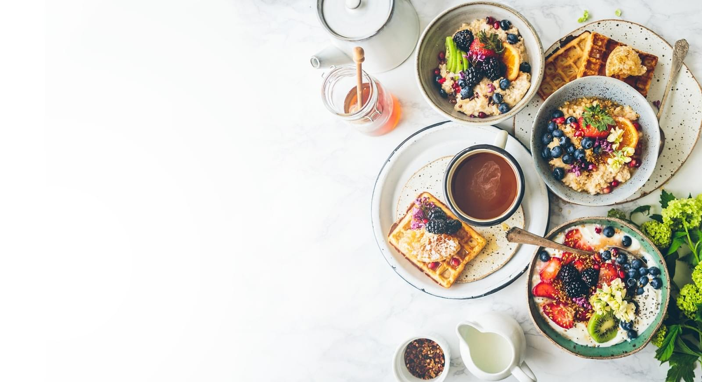

As we go about our hectic, busy days, it can be very easy to resort to a sugary snack midway through the afternoon to keep your energy levels elevated.
Ways to
manage sugar
manage sugar
As we go about our hectic, busy days, it can be very easy to resort to a sugary snack midway through the afternoon to keep your energy levels elevated.